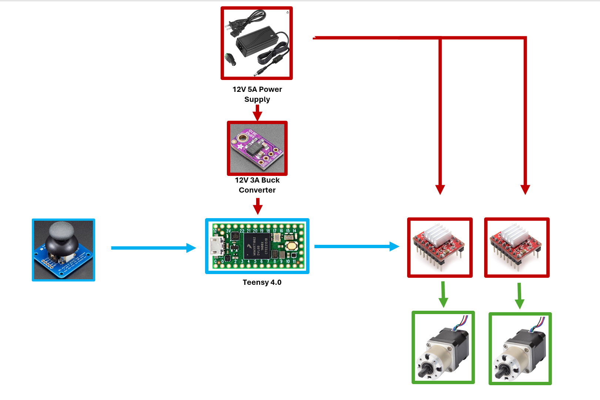
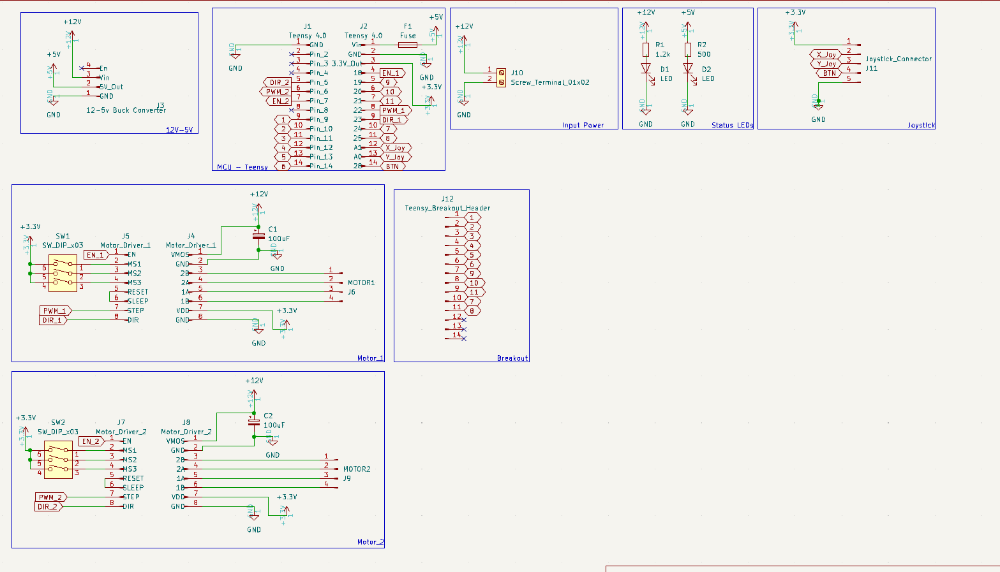
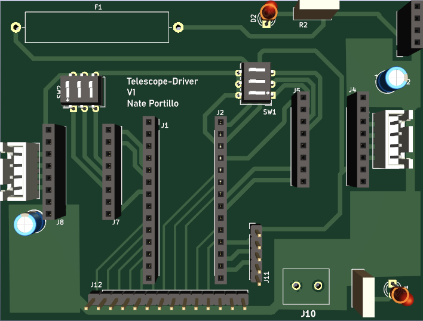
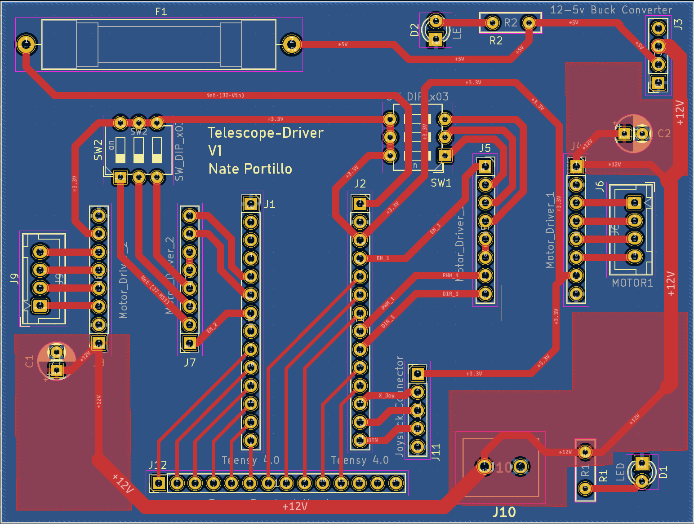
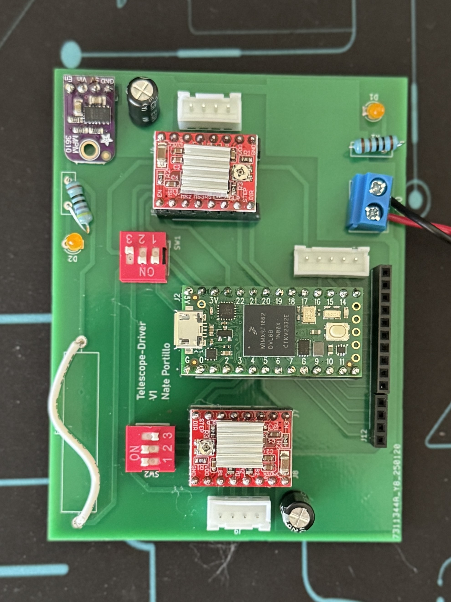
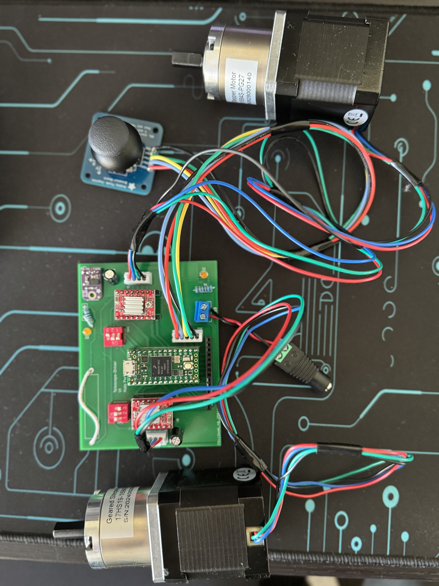
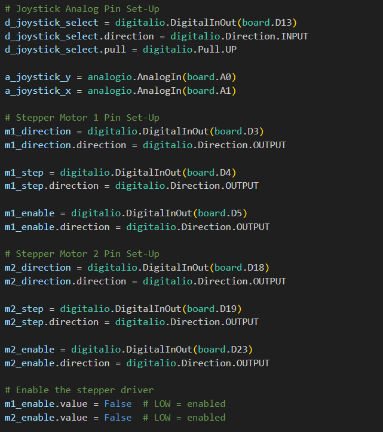
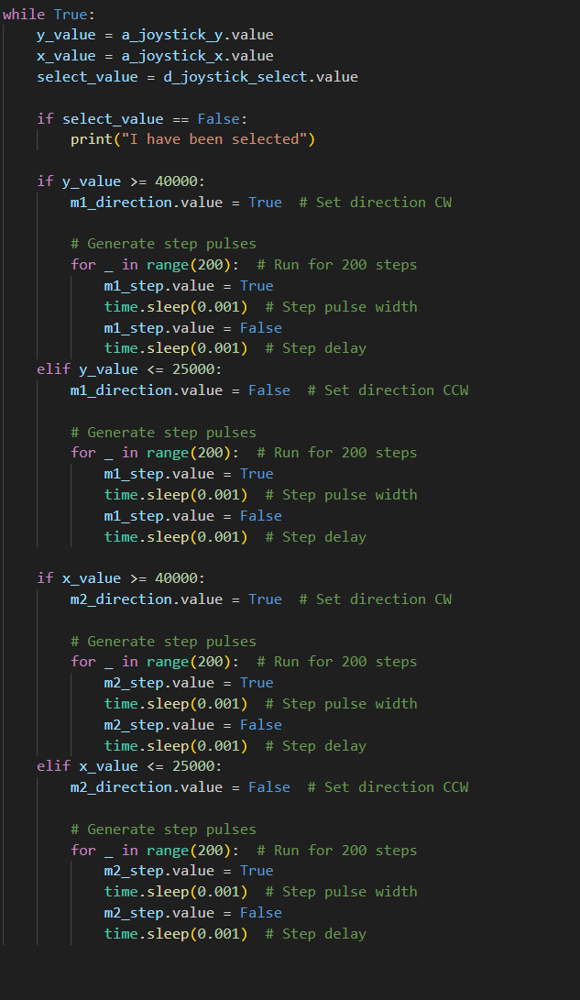

Motorized Telescope Stand
Introduction
My brother recently got a telescope and we have been having a blast with it. It isn't a particularly expensive one; totaled out to about $350 dollars. You can see Jupter's big red dot and Saturn's rings. It is absolutely stunning. However, one thing you quickly disocver is how tiring and tedious it can be aligning your telescope on the planet justttt right. Once you do, the planet has quickly moved out of frame! In an effort to resolve this issue quickly, I searched the internet for cheap motorized platforms to move the telescope automatically instead of manually. That is where the biggest problem arose. They can be pricey. So, I sought to create a motorized telescope stand on a budget with an autonamous upgrade path for the future!
Project Overview
This project will be a fun change from my previous projects. We will be dealing in eletrical, mechanical, and electro-mechanical design. With this in mind, we will have to focus on:
- Picking proper components: We will need precise motors and a beefy microcontroller for future upgrade paths.
- Portability; Integration Shield (PCB): I'd like to integrate all these components into a tight package since this stand will have to be portable.
- Good Mechanical Design: So that this stand can work well, we will need robust mechanical design for precision, stability, and portability.
Picking Components
| Components | Description | Why This Component |
|---|---|---|
| Teensy 4.0 | The Teensy 4.0 is a ARM Cortex-M7 at 600 MHz based development board. | I like this board because it is compact, extremely powerful (good for future upgrades) but most importantly it supports a wideee range of software. This includes Arduino IDE, Micro Python, Visual Micro, etc. This is extremely important in case we want to use open source tracking software or star-gazer software in the future. |
| NEMA 17 27:1 Motors | These motors come with a 48mm body and 1.68A rated current, integrated a planetary gearbox of 26.85:1 gear ratio. | These excel at low speed, high torque applications. They are also compact, making it perfect for this application. The step angle of the stepper motor alone is 0.067 degrees making it very precise. Lastly, the added planetary gearbox greatly improves our torque from 52Ncm -> 5Nm. |
| A4988 Stepper Motor Driver | The A4988 stepper motor driver has an output drive capacity of up to 35V and ±2A. | These are the go-to stepper motor driver for applications like CNCs and 3D Printing. If you want precise movement in an integrated package, this the driver to get. It fits our requirements perfectly as we won't be driving higher than 12V, 2A. Additionally, these come with easy control pins (meaning easy programming) and heat sinks to prevent overheating. |
| MPM3610 5V Buck Converter | MPM3610 is a marvel, taking up to 21V input and providing a 5V output with up to 1.2A current | This will be used to power our Teensy 4.0. I wanted a reliable, clean power source as our Teensy will be powering our motor drivers. |
| Analog 2-axis Thumb Joystick | The thumbstick is an analog joystick - more accurate and sensitive than just 'directional' joysticks - with a 'press in to select' button. | Sadly, V1 of this project can't be a fully autonomous beast, so this joystick will be used to manually control the motors. |
Creating the Shield (PCB)
The neat thing about this project's component selection is that we don't need to source JLCPCB components. Many of the boards already did that for us. So, we need to integrate them together. This board will be used mainly to connect these components together in a compact way while also helping distribute power in a consolidated way.
This block diagram helps break down the main component connection a little bit.
Does it make sense? Great! This leads us to our schematic. This might look a little different. Remember, we are dealing with nets. I.e signals, voltages, etc all tied together through connectors, headers, and pins.
With that in mind, we can create the schematic.
You may notice a few differences. I added some LEDs to confirm things are working properly. Some dip switches help us select the step size we want for our motor drivers. Next, we have the addition of two electrolytic capacitors. The datasheet of the A4988 Stepper Motor Driver lists these decoupling capacitors are nessessary to help filter out noise from the power supply. We also have an additional pins from the Teensy 4.0 exposed with header pins to help in our future upgrade path and for ease of prototyping as needed. Lastly, we have a spot for a fuse so that we protect our sensitive components from being burnt.
You also may be wondering why I didn't list out specific components for the dip switches, leds, capacitors, fuse, etc. I designed this board with through-hole components in mind and many of these components I will size and pick from scraps I have laying around my workshop (size correctly, of course). Keep in mind you can't just solder any capacitor to the board, for example. You have to size it correctly, preferrably with a low ESR, properly voltage derated cap.
Layout and PCB
Since this is an on-going project, I have yet to recieve the actual boards so pictures of those will be updated later. However, I do have some 3D models that look as follows:
 As I mentioned, this is an integration board, so everything is meant to slot into place. Looking at the design you may notice is differs a bit from my previous designs.
Built Boards
The boards finally arrived and we were able to build and assemble! Since all these parts were through-hole, soldering this board was a blast and meant good $$$ savings instead of having JLCPCB assemble it.
The RAW board. If you look closely you can see bigger copper pours for the power plane on this board compared to previous projects:

The assembled board:
Probably my least favorite part, was creating the rest of the harnessing. What this means is adding male JST connectors to our Joystick and Motors. I quickly learned how TEDIOUS those little JST pins can be.
Now that are board is built up and we confirm that it all turns on, we can move on to programming! Luckily, we added our two debug power LEDs so if those light up, we know everything is working.
Programming the Teensy
Before writing any code, we have to decide how we want to actually program it. We do have a few options..
We can use Arduino IDE which has a vast library support. Arduino IDE is great for prototyping but I am honestly not a fan of Arduino's language. You can compile in C and C++ but the toolchain set-up seems to be like a huge hassle and we don't get any advantages of picking the Teensy. To do this, I would have chosen a barebones STM32 product instead. So, that leaves us with CircuitPython! Although I am most familiar with C in an embedded environment, I have use quite a bit of Python in everyday development. This make using CircuitPython a matter of learning a few new libraries. On top of that, I really like that we can still take advantage of the openness of the platform. This is going to be very important for when we inevtiable have to connect the Teensy 4.0 to stargazing apps like SkySafari for automatic pointing.
With that being said, here is the code. The V1 code is quite simple since we want simple motor-moving-telescope functionality to start. This means: I give X-Y commands on the joystick, the X-Y stepper motors move accordingly. You'll also notice we won't have to pay too much attention to the steps. Since we added DIP switches during the hardware design portion of the project, we can make these changes on the board to increase/decrease our resolution.
The Code:
Our pin definitions were quite easy. These were, obviously, defined by our hardware first. So, it is a matter of following our schematic. You may notice that we use mostly digital pins for the 2 motors driver. However, the joystick requires analog input pins. This is because the signals being returns are voltages, manipulated by a potentiometer. We also set an additional pin from our joystick as a digital pin. This is a push-down function that we will eventually use for calibration and homing.
Our main code is very straight forward at the moment and will definitely use some optimization as the project progresses. With each loop, we poll our joystick values. Our ADC has an input range of about (0 - 65535). This is because we have a 16-bit ADC resolution; this translates to (2^16 - 1). It would be advantageous to apply different steps to the motors per ranges so that we can have speed control but at the moment we only assign thresholds. I.e Up a certain amount is 'full-speed'. Given we meet that threshold, in a certain direction, we assign whether that movement is CW or CCW.
Once we know which direction we are moving in, we generate our step pulses. This was a new experience for me. In previous projects, if I want to control a motor, I set up PWM. PWM essentially is functioning as on and off at a certain duty cycle. However, these motor drivers did not seem to play well with any PWM outputs I tried. I have to further debug, but until then, I switched over to bit banging. This application is simple enough that there are no immediate performance issues. We essentially send 200 'steps' (this is gathered from Nema 17 motor datasheet). Each step is a pulse send for a certain period. So we change our digital STEP pin to on, wait a delay, then to off. Our step frequency comes out to about 500 Hz. With a total delay of 2ms, we calculate the frequency at (1/.002). With this, we have stepper motors that move!